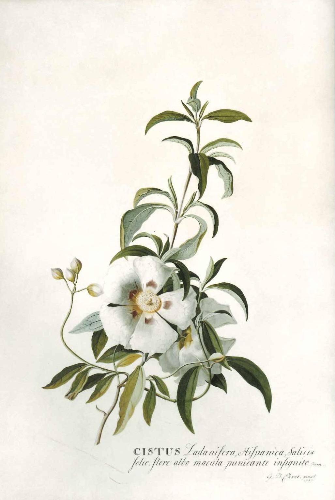

作品名 「シスタス」
花言葉 「人気」「注目の的」
シスタス
「人気」
シスタス（ゴジアオイ）の学名は古いギリシャ語からで、南ヨーロッパでは花の咲く植物としてきわめて一般的なものである。和名は、花がタチアオイやトロロアオイなどのアオイ科の植物によく似ていて、正午前後の数時間に開く一日花であることによる。ごじ（午時）とは、うまどき、つまり太陽が南中する時刻のことである。
シスタス
ゲオルク・エーレット
ゲオルク・ディオニシウス・エーレットは、ドイツの植物画家、植物学者、昆虫学者である。ヨハン・ヴィルヘルム・ヴァインマンと知り合い、ヴァインマンの『花譜』の図版も一部描いたが、報酬の支払いを巡ってヴァインマンと仲たがいし、イギリスへ移住して活動をはじめ、ヨーロッパで有名な植物画家の1人に数えられるようになった。エーレットは、しばしば芸術と現実の関係を探求し、その革新的な技法と色彩の使い方が高く評価されている。1735年から1736年の間に、博物学者のカール・フォン・リンネとオランダの銀行家でオランダ東インド会社のジョージ・クリフォード3世に雇われて最初の博物画を描いた。ハールレムの南のクリフォードの屋敷でリンネの『クリフォート邸植物』の図版を描いた。これは初期の植物画の傑作とされている。エーレットの原画は、ロンドン自然史博物館やキュー植物園、王立協会やエアランゲン大学博物館に保存されている。
| 作品名 | シスタス |
| 作者 | ゲオルク・エーレット |
| 制作年 | 747年 |
| 所蔵 | 個人蔵 |